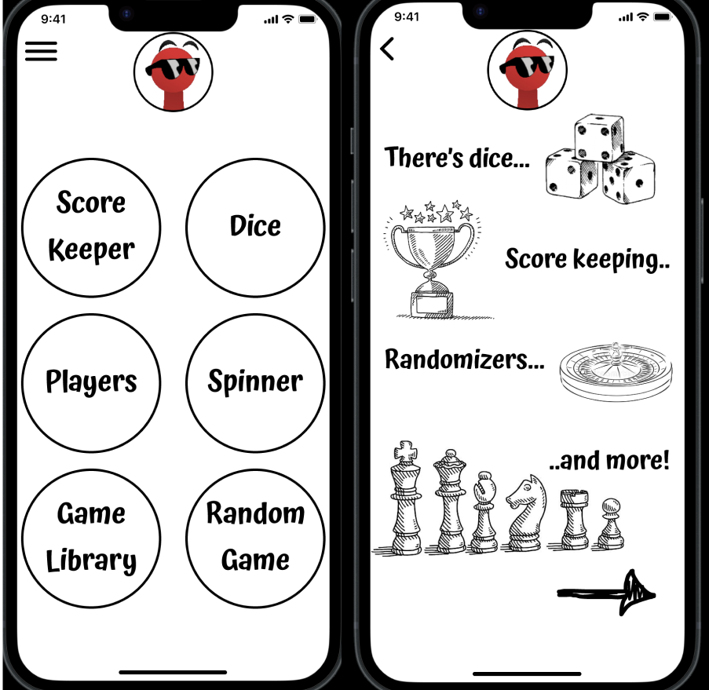

Hello! I'm Chandler North, a passionate UX/UI designer dedicated to crafting meaningful and user-centered experiences. With a keen eye for detail, I strive to create intuitive and visually appealing interfaces that enhance the way people interact with digital products. I use Figma, Adobe Xd and other tools to help streamline the design process. My approach to design is to find the intersection between aesthetics and functionality.
My Work

Gamefest Mobile Prototype
People are losing, breaking, or misplacing essential board game components. As a result, people are choosing to play other games, or are skipping playing games altogether. We conducted six interviews that provided helpful insights to the problems that the users were facing when it came to playing games with their friends. From the research we were able to create a simple design for the app that had all of the features that our users wanted. Users were really excited about all of the features that Gamefest has to offer for their game nights. Future goals would be to add the spinner feature, add more animations with the dice and random game features.

Grants.gov Website Redesign
Our team seeks to create a better Grants.gov. We conducted five interviews that provided helpful insights to the problems that the users were facing on both mobile and desktop. The wire framing allowed us to outline ideas from the feedback we got from our user testing to create a more functional website that is user-friendly on a variety of screen sizes. In the end we improved the overall navigation, clarified and broke down information and made it easy and less overwhelming for the user, created a simple and clean homepage with the main first steps of finding and preparing for application of a grant.